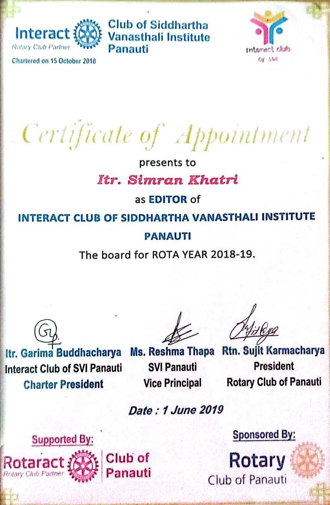
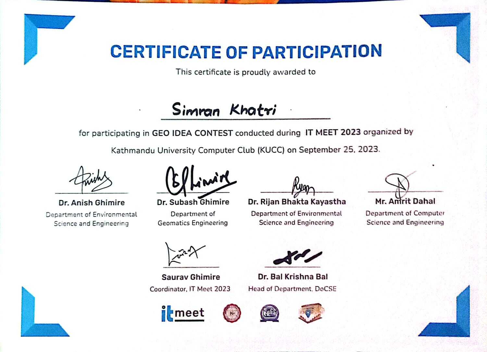

I am a 4th-year Geomatics Engineering student at Kathmandu University passionate about cartography, GIS analysis, spatial visualization, and modern geospatial technologies.
I am a dedicated Geomatics Engineering student at Kathmandu University with interests in GIS analysis, cartography, spatial data visualization, and AI applications in geospatial technologies.
Passionate about applying geospatial technologies and research methodologies for disaster management, land administration, and real-world spatial problem solving.
Hobbies: Chess ♟️ | Dancing 💃
Bachelor in Geomatics Engineering (4th Year Running)
+2 Science
Bhaktapur
SEE
Panauti, Kavrepalanchok
Developed a GIS-based landslide susceptibility model for Sindhupalchok District using the Analytical Hierarchy Process (AHP).
Integrated spatial factors including slope, rainfall, geology, drainage density, TWI, land use/land cover, and proximity analysis using ArcGIS.
Generated susceptibility zones and validated results using ROC-AUC analysis with historical landslide inventory data.
Tools: ArcGIS, GIS Analysis, AHP
Role: GIS Analysis, Mapping, Data Processing & Report Writing
View ReportConducted a research-based study on Artificial Intelligence and Automated Valuation Models (AVMs) in property valuation systems.
Explored AI applications in real estate appraisal, valuation consistency, efficiency, and transparency with focus on Nepalese perspectives.
Included SWOT analysis and discussions on integrating AI and digital land administration systems in Nepal.
Tools: AI Research, Data Interpretation
Role: Research, Literature Review & Report Writing
View Research Paper
